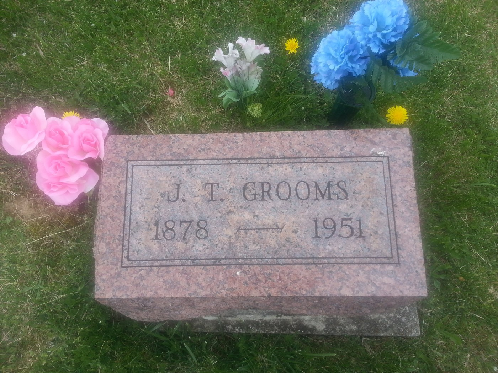

James Thomas Grooms
3 March 1878 – 18 May 1951
Quick Facts
Immediate Family
Parents
- John Franklin Grooms (1852–1914)
- Caroline L. (Bruce) Grooms (1846–1911)
Children
- Lenora Lovene (Grooms) Waulk (4 February 1936–18 May 2013)
- Vernon Charles Grooms (1930–1945)
Siblings
- Find a Grave lists Charles Henry Grooms (1872–1959), Nancy Jane Grooms Hilderbrand (1874–1933), Anna Louella Grooms Hilderbrand (1876–1968), and Eli Preston Grooms (1882–1940) as siblings; it lists Verna “Vernie” Grooms Davis (1890–1966) as a half-sibling.
On Family Tree Sites
Couple Folder
Life Timeline
3 Mar 1878 · Reported birth date; exact place unresolved in sources reviewed.
1924 · Find a Grave memorial reports marriage to Grace Evelyn Smith/Grooms; original marriage record not reviewed.
1930 · Son Vernon Charles Grooms was born, according to the memorial family panel and Grace’s obituary.
4 Feb 1936 · Daughter Lenora Lovene Grooms was born; her 2013 obituary directly names J. T. Grooms as her father.
18 May 1951 · Death reported in Elmville, Ohio; burial at Dunkard Ridge Cemetery.
Life Story
James Thomas Grooms is the J. T. Grooms named as Lenora Waulk’s father in her 2013 obituary. The obituary names him as her late father; Find a Grave links Lenora as his daughter and lists Grace Evelyn Smith/Grooms Coleman as his spouse.
Find a Grave reports James was born 3 March 1878 and died 18 May 1951 in Elmville, Highland County, Ohio, with burial at Dunkard Ridge Cemetery. The photographed marker reads “J. T. Grooms 1878–1951.” His exact birth location is not established in the sources reviewed.
James’s memorial gives his parents as John Franklin Grooms and Caroline L. Bruce, and lists older siblings Charles Henry, Nancy Jane, Anna Louella and Eli Preston. Those wider relationships are memorial-reported and have not been independently audited here.
Photographs & Family Gallery

Sources & Records
- Lenora Lovene Waulk, Journal-News obituary, 22 May 2013 — Names her late father J. T. Grooms and mother Grace Evelyn (Smith) Grooms Coleman; names her late brother Vernon Grooms.
- James Thomas Grooms, Find a Grave memorial 112958349 — Reports dates/burial; links John Franklin Grooms and Caroline L. Bruce as parents, Grace as spouse (1924), and Lenora and Vernon among children.
- Grace Evelyn Coleman, Thompson Funeral Homes obituary — Reports first husband James Thomas Grooms, who died in 1951; identifies daughter Lovene and son-in-law Paul Waulk, and son Vernon Grooms.
- Lenora Lovene Grooms Waulk, Find a Grave memorial 61634468 — Links James Thomas Grooms and Grace Evelyn Coleman as Lenora’s parents.
Person Archive
Browse the profile’s preserved material in the An American Bloodline Generation VII archive.
- Photographs and images
- Family photographs
- Headstone photographs
- Documents and records
- Research notes
- Sources and source copies
- Family books
Research Notes and Open Questions
- The Find a Grave memorial family panel lists Verna “Vernie” Grooms Davis (born 1890) in both a half-sibling category and a child list. The categories conflict and she is not linked as a child in this profile; Lenora and Vernon are the child relationships corroborated by Lenora’s and Grace’s obituaries.
- The 1924 marriage to Grace is reported by Find a Grave, but the marriage certificate was not reviewed. Lenora’s obituary provides the direct parent names J. T. Grooms and Grace Evelyn (Smith) Grooms Coleman.
- The memorial gives James’s birth as 3 March 1878 but does not specify a state in the displayed vital facts; another derivative site result suggested Adams County, but the underlying source was blocked and was not reviewed. Therefore no county has been added.
- No portrait of James was located in the memorial images reviewed. The profile image is the Find a Grave headstone photo, credited to Roger Waulk, and labeled as a headstone.
DNA
No DNA results or tests were located in the sources reviewed for this profile.